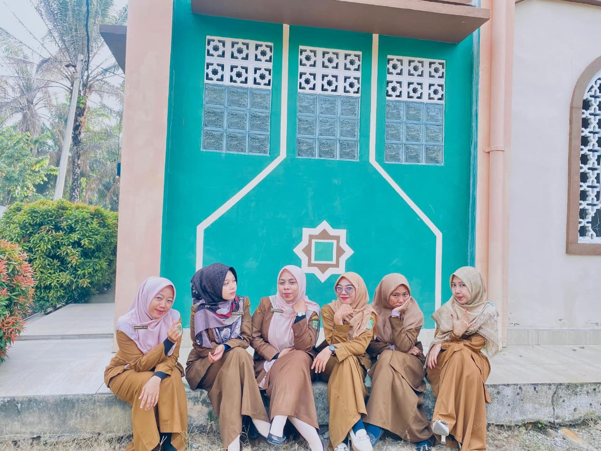

SMP IT RIYDHUL ULUM ujung batu berdiri pada 07.july.2014 Dibawah naungan yayasan tuah amanah umat, DI SMP Riyadhul Ulum ini murit murit diberi kesempatan untuk belajar dan tumbuh dalam lingkungan yang Islami, penuh dengan nilai-nilai moral dan agama yang mendalam, selain itu juga diajarkan untuk menjadi pribadi yang tidak hanya cerdas, tetapi juga berbudi pekerti luhur, jujur, dan peduli terhadap sesama.
Terwijudnya peserta didik yang berbudi luhur, beriptek, berprestasi, dan peduli lingkungan.
1. Melaksanakan pendidikan yang bernuansa agamis dan berbudi luhur.
2. Memberikan kesempatan seluas-luasnya kepada peserta didik untuk menambahkan potensi dan bakat.
3. Menumbuhkan dan mendorong semangat berprestasi terhadap semua warga sekolah.
4. Menumbuhkan dan mendorong semangat peduli lingkungan melalui kegiatan pembelajaran dan kegiatan langsung kepada seluruh komunitas sekolah.
